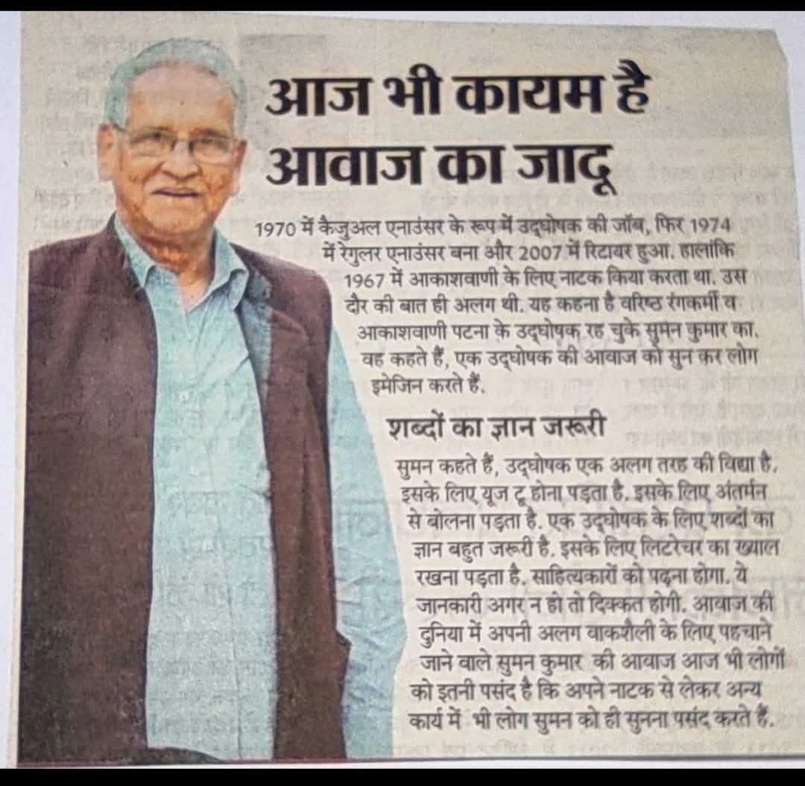
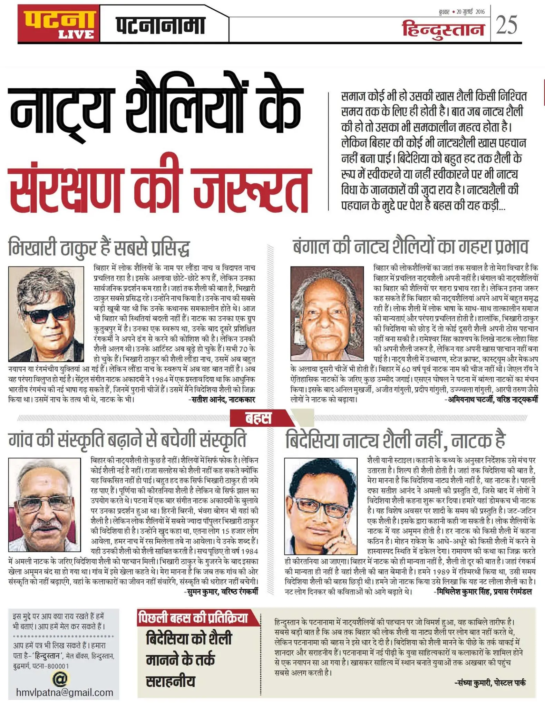
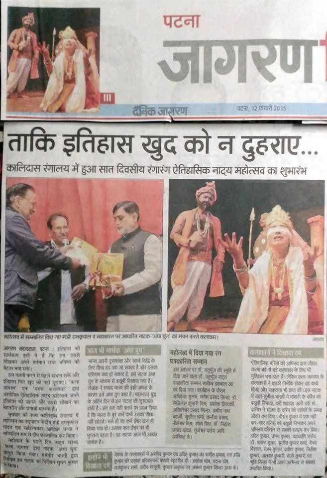

Sri Suman Kumar
"Samrat" of Bihar Theatre
Actor • Director • Broadcaster • Cultural Custodian
Born: November 15, 1947
Education: B.Sc. (1966), L.L.B. (1971) Magadh University, Bodh Gaya
Languages:
Profile Summary
Shri Suman Kumar is a foundational pillar of modern Indian theatre and a lifelong custodian of Bihar’s cultural heritage. With a multidisciplinary career spanning over six decades (since 1962), he rejected the allure of metropolitan commercial cinema to serve at the grassroots level. He is widely recognized for democratizing the stage for women, rescuing regional folk formats from obscurity, and using public broadcasting as a tool for mass social reform. As a senior broadcaster, actor, director, and institutional reformer, his work seamlessly bridges traditional grassroots art with high-caliber national representation.
Career Legacy & Impact
150+
Plays Directed
200+
Stage Roles
1,000+
Street Plays
500+
Radio Features
Pedagogy & Mentorship: Over 34 years of mentoring youth as Camp Director for Children Theatre Workshops (NZCC) and teaching acting/voice at the Bihar Institute of Dramatics. Retiring as the senior-most Announcer and Presenter for All India Radio (AIR) Patna in 2007.
Key Contributions
1. Pioneering Gender Equality in Theatre
During the conservative era of 1966–1971, Kumar broke strict patriarchal taboos that barred women from the stage. By casting women from respected households in the landmark play Amrapali at the Bhartiya Nritya Kala Mandir, he permanently opened mainstream theatre to female artists in Bihar. His performance as Ajatshatru earned him the lifelong title of "Samrat."
2. Social Reform & Public Activism
Kumar actively weaponized art against systemic evils. His play Zaruraat Issi Ki Thee tackled child trafficking and was selected for the National School of Drama’s (NSD) Jashne Bachpaan. His realistic production Dayeen confronted the horrific practice of rural witch-hunting. During the JP Movement (1970s), he co-founded the Kalakar Sangharsh Samiti under literary stalwarts Baba Nagarjun and Phanishwar Nath Renu, facing state censorship for his anti-corruption play Andher Nagari Chaupat Raja.
3. Heroism During the 1974 Patna Floods
Kumar’s dedication extended beyond art to frontline public service. When the catastrophic 1974 floods submerged the AIR Patna building, he braved treacherous waters by boat and swimming to reach the isolated Fatuha transmission center. Without food for 48 hours, he single-handedly managed the emergency broadcast, delivering life-saving information to stranded citizens.
4. Revival of Regional Roots & Folk Idioms
He stood as a bulwark against the commercial vulgarization of regional art. He integrated Bhikhari Thakur’s traditional Natch formats (including Bidesiya and Londa Nach) into modern theatrical frameworks, proving their intellectual depth. He was also a core organizational force behind the International Maithili Drama Festival (1990–2000), ensuring linguistic continuity.
5. Architect of State Identity & National Representation
Bihar Gaurav Gaan: Conceptualized in 1997 for the 50th Independence anniversary, Kumar was the overall choreographer of this massive cultural anthem. Leading 70+ artists, the production has been staged nearly 2,000 times globally, including in Mauritius.
Republic Day Jhaankis: Designed and directed state cultural tableaux at Gandhi Maidan, specifically highlighting the agrarian and cultural success of Sudha.
Cinematic Excellence: Acted in landmark national projects including Richard Attenborough’s Gandhi, Prakash Jha’s Damul, Shyam Benegal’s Discovery of India, and Gulzar’s Mirza Ghalib.
Awards & National Recognitions
Sangeet Natak Akademi Amrit Award
Government of India — Highest national recognition for performing arts
Lifetime Achievement Award
Art & Culture Department, Government of Bihar
Bhikhari Thakur Samman (Senior)
Government of Bihar
Natya Bhushan (2001)
Olympiad, Cuttack, Odisha
Patliputra Samman
Prangan, Patna for Lifetime Contribution
श्री सुमन कुमार
बिहार रंगमंच के "सम्राट"
अभिनेता • निर्देशक • प्रसारक • सांस्कृतिक रक्षक
जन्म तिथि: 15 नवंबर 1947
शिक्षा: विज्ञान स्नातक (1966), एल.एल.बी. (1971) मगध विश्वविद्यालय, बोधगया
भाषाएँ:
संक्षिप्त परिचय
श्री सुमन कुमार आधुनिक भारतीय रंगमंच के एक मजबूत स्तंभ और बिहार की सांस्कृतिक विरासत के आजीवन रक्षक हैं। 1962 से शुरू हुए छह दशकों से अधिक के अपने बहुआयामी करियर में, उन्होंने महानगरीय व्यावसायिक सिनेमा की चकाचौंध को नकारते हुए जमीनी स्तर पर अपनी माटी की सेवा करना चुना। रंगमंच पर महिलाओं की भागीदारी सुनिश्चित करने, क्षेत्रीय लोक विधाओं को गुमनामी से बचाने और जन-प्रसारण को सामाजिक सुधार का हथियार बनाने के लिए उन्हें व्यापक रूप से जाना जाता है।
करियर की मुख्य उपलब्धियां
150+
नाट्य निर्देशन
200+
मंच नाटक अभिनय
1,000+
नुक्कड़ नाटक
500+
रेडियो नाटक
शैक्षणिक और प्रसारण योगदान: बिहार इंस्टीट्यूट ऑफ ड्रामेटिक्स में वर्षों तक अभिनय और भाषण कला का अध्यापन; 34 वर्षों तक बच्चों के नाट्य शिविरों (NZCC) के निदेशक के रूप में युवा पीढ़ी का मार्गदर्शन। 2007 में आकाशवाणी (AIR) पटना से सबसे वरिष्ठ उद्घोषक और प्रस्तोता के रूप में सेवानिवृत्त।
प्रमुख संस्थागत और सामाजिक योगदान
1. रंगमंच में लैंगिक समानता की शुरुआत
1966-1971 के रूढ़िवादी दौर में, कुमार ने महिलाओं के मंच पर आने पर लगी सामाजिक रोक को तोड़ा। भारतीय नृत्य कला मंदिर में आम्रपाली नाटक में विमेंस कॉलेज की लेक्चरर को मुख्य भूमिका में कास्ट करके उन्होंने बिहार में महिलाओं के लिए मुख्यधारा के रंगमंच के द्वार हमेशा के लिए खोल दिए। इस नाटक में 'अजातशत्रु' के उनके अभिनय ने उन्हें आजीवन "सम्राट" की उपाधि दी।
2. सामाजिक सुधार और सक्रियता
बाल तस्करी पर आधारित उनका बहुचर्चित नाटक ज़रूरत इसी की थी राष्ट्रीय नाट्य विद्यालय (NSD) के 'जश्ने बचपन' समारोह के लिए चुना गया था। उनके यथार्थवादी नाटक डायन ने ग्रामीण क्षेत्रों में डायन-प्रथा के नाम पर होने वाली भयानक हिंसा और अंधविश्वास पर कड़ा प्रहार किया। 1970 के दशक में जेपी आंदोलन के दौरान, उन्होंने बाबा नागार्जुन और फणीश्वरनाथ रेणु के नेतृत्व में 'कलाकार संघर्ष समिति' की स्थापना की। भ्रष्टाचार विरोधी नाटक अंधेर नगरी चौपट राजा के लिए उन्हें सरकारी सेंसरशिप का भी सामना करना पड़ा।
3. 1974 की विनाशकारी बाढ़ में जनसेवा
जब 1974 की बाढ़ में आकाशवाणी पटना की इमारत डूब गई थी, तब उन्होंने उफनते पानी में नाव और तैरकर फतुहा ट्रांसमिशन सेंटर पहुंचने का जोखिम उठाया। बिना भोजन के लगातार 48 घंटे तक उन्होंने अकेले आपातकालीन प्रसारण संभाला, जिससे फंसे हुए लाखों नागरिकों तक जीवन-रक्षक जानकारियां पहुंचाई जा सकीं।
4. क्षेत्रीय जड़ों और लोक विधाओं का पुनरुद्धार
वे क्षेत्रीय कलाओं के व्यावसायिक पतन और अश्लीलता के खिलाफ एक मजबूत दीवार बनकर खड़े रहे। उन्होंने भिखारी ठाकुर की पारंपरिक 'नाच' विधाओं (बिदेसिया, लौंडा नाच) को आधुनिक रंगमंच के सांचे में ढालकर उनकी बौद्धिक गहराई को साबित किया। इसके अलावा, 1990 से 2000 के बीच 'अंतरराष्ट्रीय मैथिली नाट्य समारोह' के मुख्य सूत्रधार के रूप में उन्होंने भाषाई रंगमंच को जीवित रखा।
5. राज्य की पहचान और राष्ट्रीय प्रतिनिधित्व
बिहार गौरव गान: 1997 में स्वतंत्रता की 50वीं वर्षगांठ के लिए तैयार किए गए इस विशाल सांस्कृतिक गान के वे मुख्य कोरियोग्राफर थे। 70 से अधिक कलाकारों के साथ इस प्रस्तुति का मॉरीशस सहित विश्वभर में लगभग 2,000 बार मंचन हो चुका है।
गणतंत्र दिवस की झांकियां: उन्होंने गांधी मैदान में राज्य की आधिकारिक सांस्कृतिक झांकियों का निर्देशन किया, जिसमें 'सुधा' (Sudha) की झांकियों के जरिए राज्य की कृषि और सांस्कृतिक सफलता को शानदार ढंग से प्रस्तुत किया गया।
सिनेमाई उत्कृष्टता: रिचर्ड एटनबरो की गांधी, प्रकाश झा की दामुल, श्याम बेनेगल की डिस्कवरी ऑफ इंडिया, और गुलजार की मिर्ज़ा गालिब जैसी ऐतिहासिक राष्ट्रीय कृतियों में अभिनय कर अपनी बहुमुखी प्रतिभा का लोहा मनवाया।
प्रमुख सम्मान और पुरस्कार
संगीत नाटक अकादमी अमृत पुरस्कार
भारत सरकार — प्रदर्शन कला के लिए सर्वोच्च राष्ट्रीय सम्मान
लाइफटाइम अचीवमेंट अवार्ड (आजीवन उपलब्धि पुरस्कार)
कला एवं संस्कृति विभाग, बिहार सरकार
भिखारी ठाकुर सम्मान (वरिष्ठ)
बिहार सरकार
नाट्य भूषण (2001)
ओलंपियाड, कटक, ओडिशा
पाटलिपुत्र सम्मान
प्रांगण, पटना (आजीवन योगदान के लिए)
Suman Kumar: The Artistic Journey
Suman Kumar is a distinguished theatre artist and "Theatre Trendsetter" whose contributions to regional theatre span over six decades since his debut in 1962. A versatile actor and director, he has performed in over 200 stage plays and 1,000 street plays, while directing more than 150 stage productions in Hindi, Magahi, Bhojpuri, and Maithili. His career is marked by prestigious honors, including the Sangeet Natak Akademi Amrit Award and the Bhikhari Thakur Saamaan (Senior) for his lifetime contribution to the arts.
60+
Years of Legacy
150+
Productions Directed
200+
Stage Plays
1,000+
Street Plays
Cultural Preservation & Media
As a founding figure of Kala Jagran, Patna, Kumar has been instrumental in preserving traditional Indian theatre, specifically championing Bhikhari Thakur’s Naach format as a vital theatrical idiom for modern performance. His work extends beyond the stage to national media, where he served as a senior announcer for All India Radio and appeared in acclaimed productions such as Gandhi, Discovery of India, and Damul. He continues to shape the next generation as a mentor and teacher of acting, voice, and speech at the Bihar Institute of Dramatics.
Advocacy & Social Change
Suman Kumar exemplifies artistic excellence through his commitment to social change, utilizing theatre for public awareness on critical issues like child trafficking through his celebrated production Zaruraat Issi Ki Thee. He has collaborated with major international and national organizations, including UNICEF and the Bihar AIDS Control Society, to lead impactful street theatre workshops and campaigns. Since 1992, he has furthered this mission as a Chief Trainer and Camp Director for children's theatre workshops, fostering social consciousness and creative empowerment in youth across the region.
Theatrical Repertoire
A lifetime of storytelling, direction, and cultural preservation
National Recognition
The acclaimed play "Zaruraat Issi Ki Thee" (focusing on child trafficking) was invited to perform at the National School of Drama’s (NSD) prestigious Jashne Bachpaan festival.
Notable Productions
Children’s Theatre
Directed highly acclaimed productions focusing on youth talent development:
- Halla Gulla
- Beti Aaye Hai
- Naya Sabera
- Vardan Ka Pheer
- Meena
- SatyaWadi Chauraha
Official Recognition & Partnerships
UNICEF Certificate
Recognition for child welfare through theatre-based education
Bihar AIDS Control Society
10-year partnership for HIV/AIDS awareness across 50+ districts
Government Recognition
Bihar Culture Department commendation for social transformation
The Bhikhari Thakur Legacy
Preserving Bihar's Folk Theatre Tradition: The Naach Format and Bidesia
Who was Bhikhari Thakur?
Suman Kumar is dedicated to preserving and revitalizing the legacy of Bhikhari Thakur, often referred to as the "Shakespeare of Bhojpuri" .He is a leading proponent of the Naach format, utilizing it as a vital theatrical idiom for modern Indian theatre.
The Government of India recognizes Bhikhari Thakur as a cultural icon and his work as Intangible Cultural Heritage of Bihar.
Suman Kumar's Contribution
Suman Kumar has been instrumental in keeping the Bhikhari Thakur tradition alive:
Artistic Innovation:
Directed and performed Bhikhari Thakur's masterpiece across Bihar, Jharkhand, and UP, reaching over 100,000 audience members.He has integrated Thakur’s Naach format into contemporary performances, helping to maintain its relevance in modern settings.
Youth Engagement:
Suman Kumar directs Thakur's Natch Party folk plays specifically for children, ensuring the traditional style is passed down to younger generations. He has also revived this lesser-known Bhikhari Thakur play, maintaining Bhojpuri dialect.
Lifetime Achievement:
He received the Bhikhari Thakur Sammaan (Senior) from the Government of Bihar for his lifetime contribution to theatre.
"The Living Archive: A Legacy in Frames"


Gallery of Excellence
Awards, honors, and cinematic contributions
Major Awards & Honors
Cinematic Contributions
Beyond theatre, contributions to acclaimed Indian cinema and historical television.

Gandhi (1982)
Role: Actor
Director: Richard Attenborough
Significance: Academy Award-winning biographical film.

Damul (1984)
Role: Actor
Director: Prakash Jha
Significance: National Film Award winner addressing bonded labor in Bihar.

Bharat Ek Khoj (1988)
Role: Actor
Director: Shyam Benegal
Significance: Direct adaptation of Jawaharlal Nehru's book; spans 5,000 years of Indian history.

Bheem Bhawani (1981)
Role: Actor
Director: Bishamber Khanna
Significance: A crucial show for social awareness and nation-building through storytelling.
_DVD_cover (1).webp)
Mirza Ghalib (1988)
Role: Actor
Director: Gulzar
Significance: A critically acclaimed biographical television series based on the legendary poet's life.

lakhera
Role: Actor
Significance: Delivered a powerful performance that brought genuine depth and emotion to the film, keeping the audience truly connected to the story.
Testimonials & Endorsements
Reflections on a journey across airwaves, stage, and cinema.
"A stalwart of the arts whose contribution to the Bihar Culture Department transcends professional duty. His vision for the region's cultural preservation has been a guiding light for both government initiatives and grassroots artistic movements."
"On the stage, Suman Kumar doesn't just perform; he inhabits. His presence is a masterclass in the nuanced craft of the National School of Drama tradition, bringing a rare, grounded truth to every role he touches."
"सुमन जी के निर्देशन में अजबे जादू है। ऊ मगही के मिठास और देहाती संस्कृति के जे रंगे मंच पर उतारथिन है, ऊ देखला लायक रहे है। उनखर निर्देशन में नाटक खाली खेल नाय, बल्कि हमनी के आपन पहचान है।"
"एक निर्देशक के रूप में सुमन कुमार का दृष्टिकोण हमेशा कलात्मक और अनुशासित रहा है। उन्होंने हिंदी रंगमंच को नई ऊँचाइयों पर पहुँचाया है। उनके निर्देशन की सबसे बड़ी खूबी पात्रों की गहराई और कहानी की सत्यता को पकड़े रखना है।"
Impact & Legacy
A Lifetime Dedicated to the Soul of Indian Folk Theatre
Achievements & Milestones
Co-Founded Kala Jagran
Established Kala Jagran cultural organization in Patna, Bihar, creating a platform for theatre artists and cultural workers to collaborate and create meaningful art, serving as its Founder Secretary to provide a platform for modern Hindi, Magahi, Bhojpuri, and Maithili theatre.
National Recognition
Received the prestigious Sangeet Natak Akademi Amrit Award, recognizing lifetime contribution to Indian theatre. Awarded the Bihar Gaurav Award for bringing pride to Bihar through exceptional contribution to theatre.
Landmark Production
Revitalized the traditional Bhikhari Thakur Natch format, effectively bridging folk idioms with modern Indian theatre. Directed and performed in regional productions across Bihar, Jharkhand, and Uttar Pradesh.Directed the acclaimed play Zarurat Isi Ki Thee on child trafficking, which was invited to the National School of Drama's prestigious Jashne Bachpaan festival.
International Collaboration
Acted in the film Gandhi, directed by Richard Attenborough. Served as the Technical Director for the Indo-Russian Dance Festival. Received a Best Spot Presenter Award organized by AIR Patna.
Educational Initiative
Teaches acting, voice, and speech at the Bihar Institute of Dramatics. His extensive leadership record includes serving as a ChiefTrainer for state-sponsored children’s workshops since 1992 and frequentlyinter-college and inter-school theatre festivals at prestigious institutions like IIT Patna, Patna Medical College, and Magadh University.

Photo Gallery
A visual journey through decades of theatrical excellence

Suman Kumar Reading News for Doordarshan

ActorSuman Kumar on the Set of Veer Kunwar Singh.

Suman Kumar during a discussion during his time at Akashvani (All India Radio).

Suman Kumar getting his makeup done before going on stage for a play with theatre group, Kala Sangam.

Suman Kumar in his role in the play Maati Gaadi, produced by the Kala Sangam theatre group.

Suman Kumar playing the role of Abrar Khan in the stage play Amali.

Suman Kumar performing in the play Janashatru, a production by the Kala Sangam theatre group.
Suman Kumar performing on stage in a theatrical production.

Suman Kumar during a live theatre performance.

Suman Kumar in costume for a stage play.

Suman Kumar in costume during a live theatre performance.

Suman Kumar in costume and makeup for a traditional stage performance.

Suman Kumar on a film set.

Suman Kumar is pictured delivering a presentation or performance at Akashvani Patna

Dublicate Babu veer Kuar Singh per aadharit telephone vidroh Mein Kendriya Bhumika mein Suman Kumar

A stage performance of the play Makan. It was written by Mamta Mehrotra and directed by Suman Kumar as part of the Premnath Khanna Smriti Adi Shakti Natya Mahotsav.

A scene from the play Babuji ka Passbook, which was written by Madhukar Singh and directed by Suman Kumar for an event organized by Bihar Art Theatre.

A scene from the play Gandhi ke Charan Champaran Mein, which is based on the life of Mahatma Gandhi, directed by Suman Kumar.

A scene from the Hindi play Kabootari, which was directed by Suman Kumar and organized by kala jagran.

Comedy Drama Festival held from August 27-29, 2021, directed by Suman Kumar, organized by Kala Jagran, Patna.Sponsored by Ministry of Culture, Government of India

This play Sadagati was directed by Suman Kumar.The play was performed at an event organized to commemorate Premchand Jayanti.The event was hosted by the Department of Art, Culture and Youth, Government of Bihar, and the Bihar Sangeet Natak Academy.

This play Madhavi was written by Mamta Mehrotra and directed by Suman Kumar.The performance took place during an event organized by the Eastern Zonal Cultural Centre (EZCC), Kolkata, which is under the Ministry of Culture, Government of India.

A scene from the theatrical production Sur Sundari. Writer: Dr. Shanti Jain. Directed by: Suman Kumar. Courtesy: Sangeet Natak Akademi, New Delhi

Scene from the play Gotya ko Bacha Lo, written by Hrishikesh Sulabh, directed by Akhileshwar Prasad Sinha, and guided by Suman Kumar with the support of the Ministry of Culture, New Delhi.

Scenes and promotional material from the 11th Historical Drama Festival, held in memory of Dr. Chaturbhuj.Organizers: Kala Jagaran and Magadh Kalakar.Courtesy: Department of Art, Culture and Youth, Government of Bihar.

Ceremonial lamp-lighting and a dramatic scene from the stage production of Ramdhari Singh Dinkar’s classic work Urvashi, directed by Suman Kumar in Munger under the auspices of the Department of Art, Culture and Youth, Government of Bihar.

Suman Kumar is pictured addressing the audience during the Bihar Mahotsav 2014, held from April 25th to 27th at Rabindra Bhawan in New Delhi.

Suman Kumar is seen teaching and guiding actors during a rehearsal session for the Hindi publication Mati ki Pukar at Kalidas Rangalaya, Patna.

Suman Kumar provides professional guidance and voice direction to an actor during a script recording session in a studio setting.

Suman Kumar is pictured alongside the legendary poet, lyricist, and director Gulzar.

Suman Kumar is pictured in a lighthearted moment with colleagues during the shooting of a Bhojpuri movie.

Suman Kumar shares a warm moment with Bhojpuri superstar Pawan Singh during the production of a Bhojpuri film

Suman Kumar is pictured receiving a prestigious memento and floral bouquet at an awards ceremony

Suman Kumar is pictured with a group at the India International Trade Fair (IITF) held from November 14th to 27th in New Delhi.

Suman Kumar is pictured conducting a theatre workshop for children at the North Zone Cultural Centre, where he is seen teaching stage movement and direction.
Press Coverage & News Clippings
Media recognition and coverage over the years

The Magic of Voice: Suman Kumar's Perspective
Suman Kumar reflects on his journey from a casual announcer in 1970 to a retired veteran, emphasizing that a deep connection to literature and the "inner voice" is vital for the craft. He advocates for the preservation of Bihar's folk theater styles, warning that these cultural treasures will fade unless we protect the village-level traditions and the artists who sustain them.

Safeguarding the Roots of Rural Culture
In this discussion on Bihar's theatrical styles, Suman Kumar argues that "folk" is the fundamental essence of the region’s identity. He stresses that cultural heritage cannot be saved in isolation; rather, the culture will only survive if we actively support village-level artists and promote the rural lifestyle that birthed these traditions.

Reviving History through Drama: Historical Theatre as a Lesson for the Future
This report covers a historical drama festival at Kalidas Rangalaya featuring the play 'Andha Yug', which was directed by Suman Kumar. Ram Kripal Yadav was also present at the event. The article highlights his role in using theatre as a medium to reflect on history and human nature, ensuring that the mistakes of the past are understood and not repeated by future generations.
Video Gallery
Performance recordings and testimonials

Bihar Bihan | Suman Kumar (Actor & Director) | Producer- Rohini Chaudhary

Suman Kumar Receiving Sangeet Natak Akademi Amrit Award

Bihar Vihan | Suman Kumar | Producer - M prabhakar

JEEVAN HAI ANMOL Street Play By Kala Jagran | director : Suman Kumar | Street Play is based on importance of water & Plants for Life.

Bharat Ek Khoj | Episode-24 | Delhi Sultanate & The Arrival of Turk-Afghans & Prithviraj Raso(I)and (II)

Bheem Bhavani Comedy Serial EP 02 Ashok Kumar Anoop Kumar

Bheem Bhawani EP 11 - Old Doordarshan TV Serial

Bharat Ek Khoj | Episode-14 | Ashoka, Part-I
DAMUL| Suman Kumar|PRAKASH JHA MOVIE

Mehnat aur manjil documentary| Suman Kumar

Suman Kumar Interview | Actor & Director | The full volume
Voices of Support
Suman Kumar's lifelong dedication to the arts represents the transformative power of theatre in Indian society. His journey goes far beyond individual achievement; his work actively shapes our cultural landscape and continues to inspire new generations of artists and practitioners. We are currently collecting stories and endorsements to document his incredible impact.
For endorsements, testimonials, or additional information, please contact:
Email: kalajagran@gmail.com
Phone: +91 9934035237
Theatre for Change: Impact & Social Service
Beyond Performance: Using theatre as a powerful tool for social transformation
Grassroots Social Initiatives